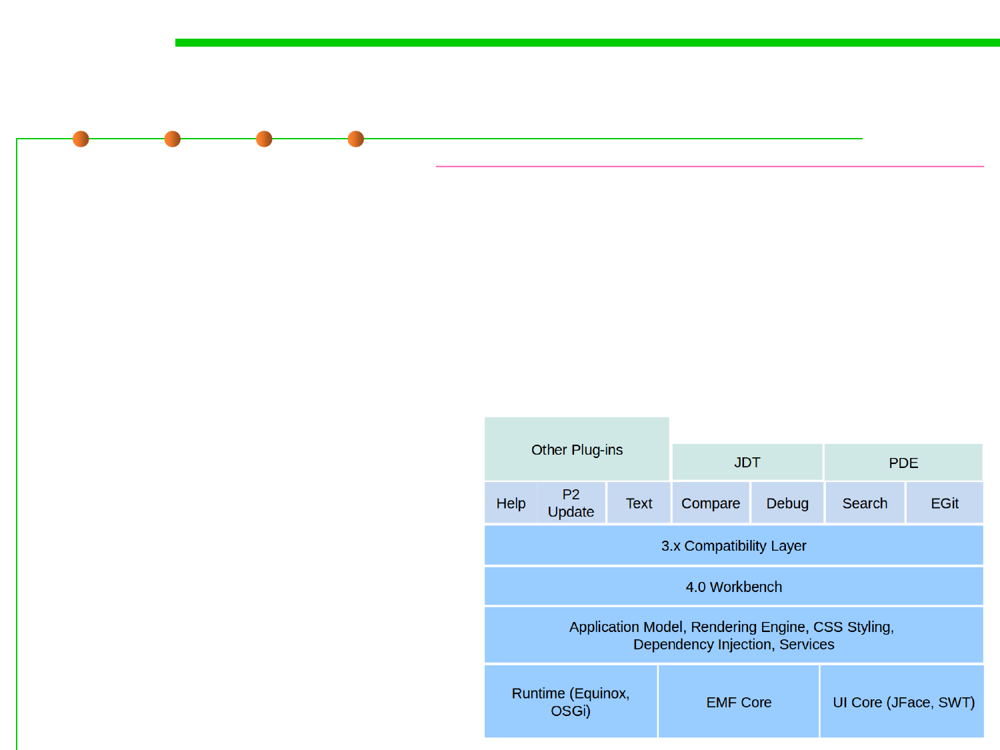

2.2 Process, Systems, and Tools of Software Construction
Core components of Eclipse IDE
▪ Workbench UI Core
http://help.eclipse.org/oxygen/index.jsp
– This plug-in implements the workbench UI and defines a number of
extension points that allow other plug-ins to contribute menu and toolbar
actions, drag and drop operations, dialogs, wizards, and custom views
and editors. Workbench UI 定义了许多扩展点，允许其他插件提供UI功能
– Standard Widget(窗口小部件) Toolkit (SWT) and JFace framework
▪ Java development tools (JDT)
– It extend platform workbench
by providing features for editing,
viewing, compiling, debugging,
and running Java code.
▪ Plug-in Dev. Env. (PDE)
– Tools that automate creation,
manipulation, debugging, and
deploying of plug-ins.